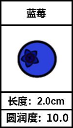

特征
首先，让我们来揭开一个谜团：怎样才能让电脑看懂图片呢？答案是——数字！
有些神经网络可以通过像素来识别图片。
对于我们的神经网络而言，我们需要为数据分配一些关键属性，以便让网络来识别这些数据。
比如，我们想让神经网络区分草莓和蓝莓。那么，我们可以给这些水果标上两个属性：长度和圆润程度。

草莓通常比蓝莓长而尖，而蓝莓则更加短而圆润。把这些属性数字化之后，神经网络就能够通过这些数字来判断水果的种类了！
当然，属性的选择不是唯一的，可以根据实际情况选择更多更准确的属性来让网络进行分类识别。